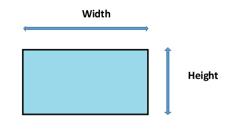

What You Should Know - Makey Makey: House of Shapes
 Important Vocabulary
Important Vocabulary
- Blueprint – a detailed drawing of a building or structure
- Quadrilateral – a figure with four sides (ex: square, trapezoid, diamond, etc)
- Polygons – a polygon is any figure that contains multiple sides. (ex: triangle, rectangle, hexagon, etc.)
- Angles – the space that is formed when two lines connect
- Vertex – the point where two lines connect, like a corner
- Vertices – the plural of vertex
- Length – how long something is
- Width – how wide something is
Background Information
Blueprint
A blueprint is a construction drawing that is drawn by architects and is used by the builders and construction workers to help them plan, design, and create different types of structures. It is very detailed and outlines exactly how a building is to look including the measurements, materials to be used, and even where the doors and windows should go. The first step in creating a blueprint is to imagine how you want your structure to look. You may write notes on specific details you want it to have, how large you want it to be, etc. The second step is to sketch a picture of your structure. The last step is to add notes. These notes are used by everyone who has access to the blueprint to help them understand what they are looking at and to tell them information that they may not be able to see from looking at the drawing. Blueprints are typically drawn on graph paper to help with measurements.

What is a Circuit?
A circuit is a path that electricity can flow through. In order for a circuit to work it must be complete and have no breaks. All circuits contain three parts: an energy source (battery, solar panel, wind turbine, etc.), a path through which to travel (wire or conductive material), and a load (something that turns on).
Series Circuit
A series circuit is a circuit that is closed but contains more than one resistor (more than one light bulb, motor, buzzer). When electricity flows through a series circuit the current only travels on one path. If there is a break in the circuit it stops the whole circuit from working. Series circuits also affect the brightness of the bulb, the more resistors you add (LED bulbs) the farther the current has to travel and the LED bulbs become dimmer.

Parallel Circuit
A parallel circuit is a circuit that is closed ad like a series circuit it also contains more than one resistor (more than one light bulb, motor, buzzer). However, when electricity flows through a parallel circuit the current goes through every component in the circuit and carries the same amount of current to all of the resistors. Parallel circuits do not affect the brightness and an added benefit of parallel circuits is that if one resistor breaks, the others will continue to work because the current has multiple paths it can travel.

What is a 2D Shape?
A shape that is 2D has two dimensions: length and width.
Any shape that can be laid flat on a piece of paper is a 2D, or two-dimensional, shape.

Examples of 2D shapes include rectangles, squares, circles, and triangles.
What is a Polygon?
A polygon is a 2D shape. Polygons are made of straight lines that all connect. They are closed shapes, meaning they have no openings on their edges. Did you know? Circles are not polygons. They do not have straight sides or angles.
The shapes on the left are polygons because they are closed shapes. The shapes on the right are not polygons because they are open shapes.

Classifying Shapes
To classify shapes based on attributes you can consider characteristics of the shape like number of sides, the length of sides, or even angles and vertices. Specific types of shapes contain specific properties. For example: a triangle has 3 sides and vertices, but a square has 4 sides, 4 vertices, 4 right angles (90°). Some shapes share properties and can be classified into larger categories of shapes. For example: a triangle and a square both have many sides and would be classified as polygons even though a triangle has 3 sides and a square has 4 sides.
|
Shapes |
Attributes |
|---|---|
|
Polygons |
2D, flat, closed, multiple sides, all straight lines |
|
Quadrilateral |
2D, flat, closed, 4 sided, 4 vertices, sum of all angles is 360° |
|
Regular Quadrilateral |
4 sides of equal length |
|
Irregular Quadrilateral |
4 sides of unequal length |
|
Triangle |
3 sides and 3 vertices |
|
Scalene Triangle |
A triangle with 3 sides of different lengths and 3 different angles |
|
Isosceles Triangle |
A triangle with 2 sides of equal length and 2 angles of same degrees |
|
Equilateral Triangle |
A triangle with sides of equal length and 3 equal angles |
|
Rectangle |
Opposite sides are parallel and equal to each other, all vertices are right angles (90°) |
|
Square |
4 right angles (90°), all sides are the same length, opposite sides are parallel to one another |
|
Trapezoid |
4 sides, one pair of sides are parallel to one another but are different lengths. |
|
Rhombus (diamond) |
4 equal straight sides, all sides are equal lengths, angles are not 90° |
|
Circle |
A round shape with no beginning or end |
|
Pentagon |
5 sides, 5 angles, 5 vertices, closed with straight lines |
|
Hexagon |
6 sides, 6 angles, 6 vertices, closed with straight lines |
Career Connection and Real-World Application
Electrical Engineer
Electrical engineers design and create new devices that use electricity to enhance our lives. They must understand how electricity travels through circuits so these new devices can work correctly and are safe for human use. If done incorrectly the device may not work or worse—electrocute somebody.

Architect
Architects use their mathematical knowledge of shapes to design different structures such as buildings, homes, and bridges. They must first draw a blueprint to help them plan how their structure will look and to make it as stable as possible. They need to know the most durable and strongest shapes so structures do not fall down. If done incorrectly it could be very dangerous.
Computer Programmer
Computers do not have brains to think or make decisions. Therefore, they need instructions to know what to do. Computer programmers write computer code for computers to follow so they can perform certain tasks. Code is what runs all of the technology around us. Without computer programmers we would not have smartphones, search engines, or even this website.